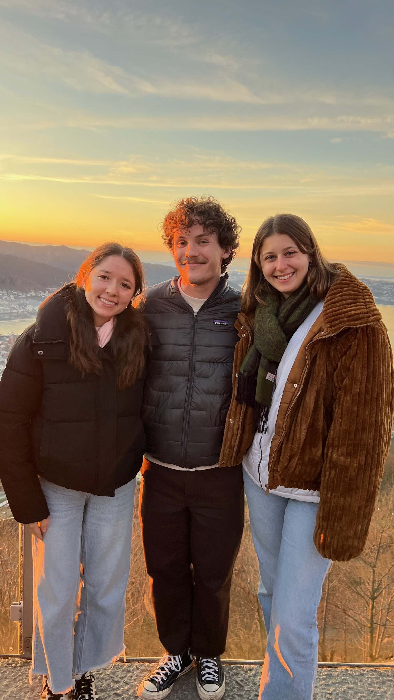

came to visit!
I’m just five days out from ending my first semester (if you can call it that - my brain is still wired on the school calendar) in Norway. I’m excited to be
home and see everyone I’ve missed and have things be familiar for a bit, but I’m also excited to continue my time here in the new year and learn more
about life in this country. There continue to be new wrinkles and traditions I learn about each week. Yesterday was Saint Lucy’s Day, a holiday I did not
know existed until it was almost over. It celebrates Saint Lucy, or Lucia, who was given sainthood for her efforts in the fourth century to bring food
and other supplies to Christians hiding from religious persecution from Romans before she was eventually captured and killed herself. According to legend
she traveled through the night with a candle on her head so she could carry more food in her hands, and with the day also falling close to the winter
equinox the day is celebrated as a festival of light. Strangely, Scandinavia is the only region in the world that celebrates this holiday (with the major
exception of the island nation of Saint Lucia, for obvious reasons) and despite its religious nature, these celebrations also take place in schools and
in the workplace. I was working from home yesterday, not knowing what I was missing out on, but my office had a candle lighting ceremony and people baked
saffron buns, the traditional food of Saint Lucy’s Day. I didn’t totally miss out on the celebration though, as after my hockey practices in the evening
one parent came in with their own homemade saffron buns for the team.
|  | |
| Another reason to celebrate this week - Araceli and Rachel came to visit! |
Less fun despite the tree - icy sidewalks are becoming the norm |
This close tie of religion to everyday traditions is something that is fairly common in Norway, which is particularly interesting given Norway’s relatively
liberal values and the fact that, by and large, Norway isn’t really a church-going country. Only about 5% of Norwegians attend a religious ceremony each
week, compared to one poll that puts the US at around 42%. Despite this, Norway has an official state religion (Lutheran Protestantism), and an official
Church of Norway that the King of Norway presided over until 2012, and the Church remained under the jurisdiction of the government until 2017 when it
became a separate organization. So, despite the current disinterest in church-going, holiday traditions commonly take a religious form, such as in
schools where one of my roommates shared with me it’s common to attend a church service together with your class before leaving for winter break. The
country’s ties to religion is another element that reflects the fact that for a long time, Norway has been a pretty homogenous society, and until very
recently, there haven’t been too many large religious minorities. In many ways, the acceptance of a new, more diverse, Norway defines many of the
challenges the country faces going forward.
In non-Norwegian news, last week I attended the Confederation of European Probation’s Electronic Monitoring conference, which is to say I really roughed it
up on a beach in Portugal for a few days while basking in the 70 degrees and sunny weather, a full 40 degrees warmer than what I was missing back in
Oslo. The experience was an interesting one, in the sense both that I got a better understanding of the criminal justice landscape in Europe, and also
that I was acting both as a representative of the US and as a representative of Norway. The contradiction of being an American in a Norway name tag for
one caused a lot of language confusion - I was immensely disappointing to Swedes who came up to me speaking Swedish only to realize I didn’t understand a
word they were saying, and also pleasantly surprising to Brits who complimented me on how good my English was (thanks, I’d hope so).
Attendees were from all corners of the justice system - some people were researchers like me, and others were politicians, judges, correctional officers,
probation workers, attorneys, and about everything in between. Though I was a little nervous about attending without really knowing anyone there, I found
these shared experiences made chatting with strangers a lot easier, and networking came a lot more naturally to me when I was talking about something I
actually cared about than other career events I had ever attended. Comparing the approaches to justice between countries was the main area of interest
for the week though, especially with Norway considered such an international leader in the area. In some ways, I did feel that Norway had an approach I
preferred to other countries. For one, while part of the conference discussed advanced technology to use to track people incarcerated through EM or other
people of interest, it was primarily the Scandinavian delegation that voiced concerns about not using more invasive technology than was necessary for
public safety, and reducing stigma when possible. There were even some talks from the Norwegian constituents to have ankle bracelets used for Electronic
Monitoring go on the wrist and have the appearance of a watch, to hopefully reduce the stigma people feel going into public wearing an ankle bracelet.
 |
 |
| Views from inside the main conference room | The Portuguese coastline, truly roughing it |
However, there were other topics in the conference that illustrated areas in which the Scandinavian countries are less humane than other European systems.
Unlike the US, jails or temporary holding centers aren’t really a thing for people who have been charged with a crime but are still awaiting their trial.
Typically people are either let go until their trial in low-risk situations, or are put into the same prison they would be in if they were convicted
temporarily, typically in a separate pre-trial detention wing. In Scandinavia, where fears that a person may tamper with evidence pre-trial are much
greater than other countries, this will even mean keeping people in solitary confinement for long periods of time before their trial. In cases like
these, or when the conditions of pre-trial prison wings aren’t any different to other areas of the prison, this system doesn’t particularly respect the
presumption of innocent until proven guilty that is supposed to be the basis for justice systems. The conference discussed EM as a possible alternative
to these high rates of pre-trial detention, and I think if implemented correctly could be a positive development for Norway to take away.
This might be my last Norway update until after the holidays, so for the time being God Jul and Godt Nytt År! Excited to see what Norway brings me in 2025 :)